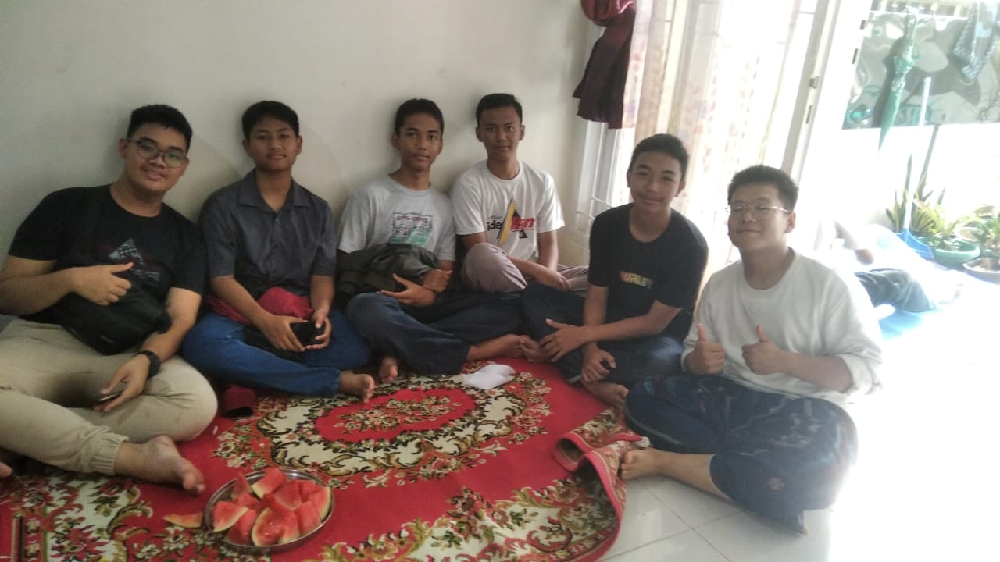
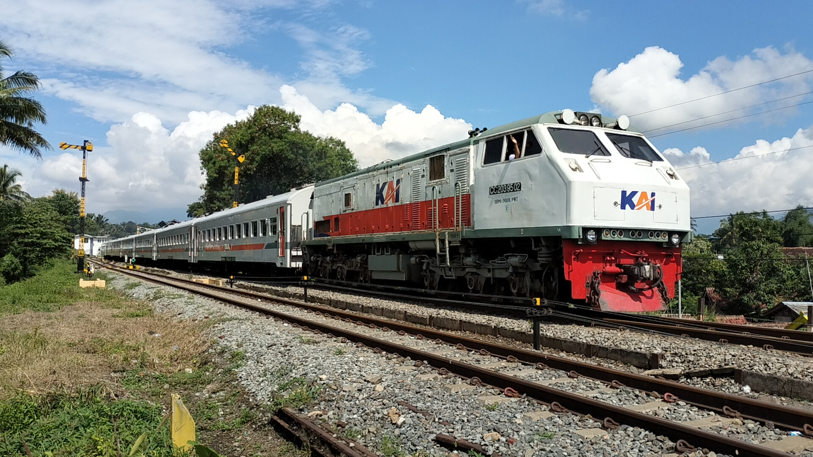
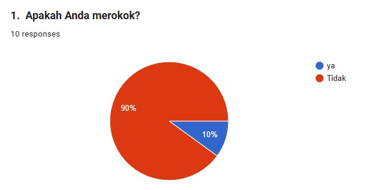
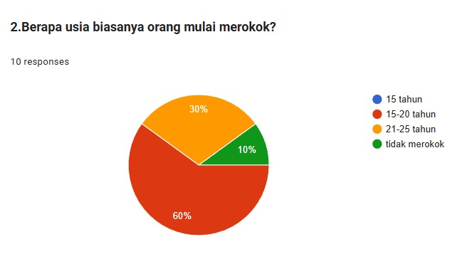
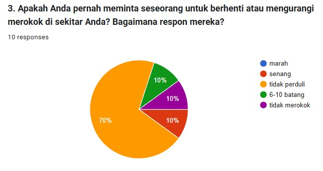
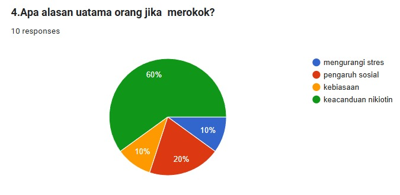
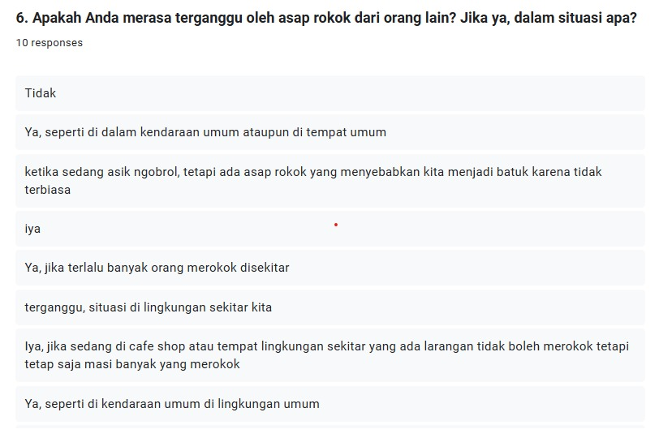
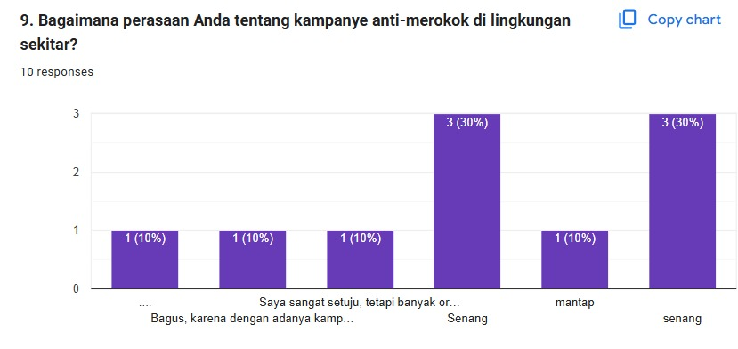
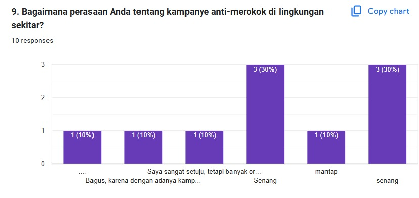

Biografi

Saya lahir pada tanggal 28 September 2008 di Jakarta, selama masa kecil saya, saya tumbuh di Kota Bogor.
Pada tahun 2012, saya bersekolah di TK Kartini di Pandeglang, kemudian melanjutkan di TK Kartika hingga SDN 04 Pandeglang,
pada tahun 2016 saya pindah kembali ke Kota Bogor dan melanjutkan pendidikan di SD Alam Ciomas hingga 2021. Setelah itu dan
bersekolah di SMP Islam Ibnu Hajar hingga 2024
Mengenal koding
Awalnya saya mengenal koding pada tahun 2021 di SMP Islam Ibnu Hajar oleh Pak Rizki,
waktu itu mengenal tentang konsep algoritme dan scratch, namun tidak dilanjutkan dan
akhirnya sempat menjadi mapel informatika hingga 2023. Pada tahun 2024 ini setelah saya
masuk SMK Wikrama, saya mengambil mapel PPLG dan mempelajari ilmu web dasar html dan css,
akhirnya saya dapat memahami web dasar walaupun tidak terlalu jago di bidang css.
Sertifikat yang saya miliki


Railfanning

pada tahun 2018 saya mencobakan diri untuk menjadi seorang Railfans dan pada tahun 2020 Subscriber saya ada sekitar 80 orang,
awalnya konten youtube saya adalah konten hunting dan me-review perkiraan update bussid, pada Juli 2020
karena waktu itu masih kecil/sebelum remaja tepatnya usia 12 tahun, saya ingin mengganti channel youtube saya
menjadi RailSpotter TV, akan tetapi akun saya dinonaktifkan permanen karena waktu itu saya mengganti foto profil dan nama saya di laptop,
keesokan harinya saya bisa membuat ulang akun kedua saya, dan saat ini, Subscriber Saya bertambah lebih banyak dari akun sebelumnya
yang dinonaktifkan permanen yaitu sekitar 753 Subscriber.
Awalnya saya hunting kereta api di sekitar kota Bogor saja, dan dilokasi JPL 04 Stasiun Bogor Paledang. Akan tetapi titik lokasi hunting
keretanya mulai ke wilayah lainnya seperti Jl. R.E. Martadinata, Pasar Anyar dan Kedungbadak, bila ada acara keluarga, saya bisa hunting KA
di Bandung hingga Cibatu.
Hasil Observasi kelompok IPS PIPAS
Tugas observasi ini merupakan bagian dari tugas kelompok 5 SOS PIPAS, sebuah observasi sosial dalam mengamati kenakalan remaja di sekolah
dengan tema "Bahaya Merokok".
Anggota Kelompok
-
Duta Suksesi Faturahman
-
Queentana Alea Hasanah
-
Darryl Shaquiele Herniwan
-
Chelsea Indra Puntadewa
-
Muhammad Railfans
-
Fajer Ibrahim
Tujuan observasi
Observasi pada tema ini bertujuan untuk
-
Mengetahui data peserta didik SMK Wikrama / Warga sekitar yang merokok.
-
Melakukan sosialisasi pencegahan merokok dan bahaya merokok.
-
Mengetahui dampak langsung merokok terhadap kesehatan dan lingkungan sekitar.
Hasil Observasi awal
Hasil observasi awal menunjukkan bahwa masih banyak warga yang merokok dan sebagian besar perokok mengeluhkan masalah pernapasan
seperti batuk dan sesak napas. Selain itu, banyak ditemukan sampah puntung rokok berserakan di lingkungan sekitar, yang dapat
mencemari tanah dan air.
Pembahasan
Temuan ini menunjukkan bahwa merokok dapat menyebabkan berbagai penyakit seperti paru-paru, jantung, dan kanker. Sampah puntung rokok
juga mengandung zat berbahaya yang dapat merusak lingkungan. Asap yang dihasilkan rokok bisa merugikan warga yang menghisap asap rokok.
Analisa data





 

Tindakan Pencegahan
-
Berhenti merokok
-
Mengjindari tempat-tempat merokok
-
Memasang peringatan tentang bahaya dari merokok
-
Gunakan teknik relaksasi alternatif
-
Buatlah lingkungan bebas asap rokok
-
Jaga dan selalu memperhatikan kesehatan kita
-
Cari dukungan dari ahli kesehatan kita
-
Pahami resiko paparan pasif
Hasil pengamatan
Jadi seperti yang saya amati di sekitar masih banyak orang yang cuek dan acuh terhadap bahaya dari rokok ini, baik bahaya bagi dirinya sendiri ataupun bahaya untuk
orang - orang di sekitarnya. Bagi orang yang merokok mungkin tidak terlalu merasakan efek dari perbuatannya tapi mungkin bagi orang – orang disekitarnya itu bisa sangat mengganggu.
Kontak saya
-
Instagram : darryl_railfans
-
YouTube : Darryl Railfans